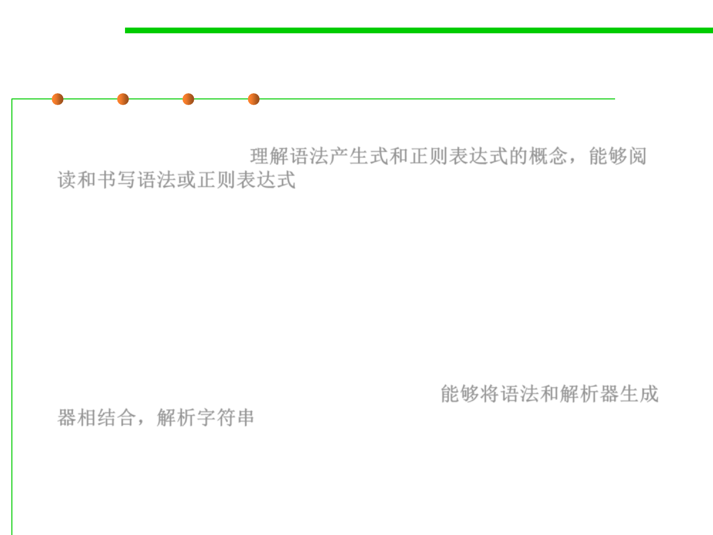

6.3 Maintainability-Oriented Construction Techniques
Objective of Grammar-based Construction
▪ Understand the ideas of grammar productions and regular
expression operators 理解语法产生式和正则表达式的概念，能够阅
读和书写语法或正则表达式
▪ Be able to read a grammar or regular expression and determine
whether it matches a sequence of characters
▪ Be able to write a grammar or regular expression to match a set of
character sequences and parse them into a data structure
▪ Be able to use a grammar in combination with a parser generator, to
parse a character sequence into a parse tree 能够将语法和解析器生成
器相结合，解析字符串
▪ Be able to convert a parse tree into a useful data type